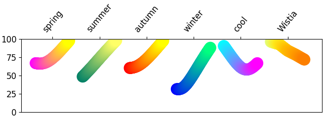

어떤 프로그램이든 visualization을 해보신 분은 한번쯤 화려한 무지개빛 그림을 보고, “나도 저렇게 해보고 싶다” 라고 생각해보셨을 것 같습니다.
이런 그림은 colormap이라고 불리는 기능을 이용하는 것으로, 데이터를 색으로 표현하여 아름다움과 함께 직관적인 이해력을 높여줍니다.
Matplotlib에서 colormap을 적용하는 방법을 알아봅시다.
1
2
3
4import matplotlib.pyplot as plt
import matplotlib as mpl
%matplotlib inline
print(mpl.__version__)- 실행결과: 버전은 3.1.3. 기준입니다.
1
'3.1.3'
References
1. Colormaps
1.1. 데이터 불러오기
Kaggle, Boston Housing
Scikit-Learn, 7.Dataset loading utilities
Colormap을 적용할 예제를 위해 보스턴 집값(boston housing) 데이터를 불러오겠습니다.
보스턴 집값 데이터는 kaggle에서 다운받을 수도 있지만 편의를 위해 scikit-learn에 내장된 데이터를 불러오겠습니다.
1
2
3
4
5import pandas as pd
from sklearn.datasets import load_boston
boston = load_boston()
print(boston.feature_names)- 실행결과: 보스턴 집값의 인자(feature) 이름은 다음과 같습니다.
- 각 인자들의 의미는 여기에서 찾을 수 있지만, 직관적이지 않습니다.
1
['CRIM' 'ZN' 'INDUS' 'CHAS' 'NOX' 'RM' 'AGE' 'DIS' 'RAD' 'TAX' 'PTRATIO' 'B' 'LSTAT']
1
2
3
4dfX = pd.DataFrame(boston.data, columns=boston.feature_names)
dfy = pd.DataFrame(boston.target, columns=["MEDV"])
dfb = pd.concat([dfX, dfy], axis=1)
dfb.describe()- 실행결과: 결측치 없는 506개의 데이터에 대한 요약을 볼 수 있습니다.
앞선 글의 설정을 이용하여 한글 사용을 가능하게 한 후, 데이터를 시각화 해보겠습니다.
각각의 인자들이 집값(
MEDV)과 어떤 관계를 가지고 있는지 알아보기 위해 인자들과 집값과의 상관도를 그려보겠습니다.1
2
3
4
5
6
7
8
9
10fig, ax = plt.subplots(figsize=(10,6), ncols=5, nrows=3) # 그래프를 5 x 3으로 배열합니다.
axes = ax.ravel() # 5 x 3 으로 생성된 subplot을 1 x 15로 변환해 줍니다.
feats = boston.feature_names # feature 이름을 가져옵니다.
for i, col in enumerate(dfb.columns): # column의 순서와 이름을 동시에 가지고 옵니다.
axes[i].scatter(dfb[col], dfb['MEDV'], s=3) # scatter plot을 그립니다.
axes[i].set_xlabel(col) # x label에 feature 이름을 넣어줍니다.
plt.tight_layout()
plt.plot()- 실행결과: 두 인자 간의 관계를 알 수 있는 14개의 scatter plot이 그려집니다.
- 실행결과: 두 인자 간의 관계를 알 수 있는 14개의 scatter plot이 그려집니다.
각 인자들과 집값 사이의 관계는 알기 쉬워졌지만, 정작 어떤 인자들인지 한 눈에 들어오지 않습니다.
이해도를 돕기 위해 x축의 인자 명을 한글로 입혀봅시다.
ax.set_xlabel()에 한글 이름을 넣어주면 가능하지만 14개 그래프에 일일이 넣기 힘드니 일괄적으로 처리해 보겠습니다.1
2
3
4
5
6
7
8
9
10
11
12
13
14
15
16
17
18
19
20labels_kr = [ # 홈페이지 설명을 바탕으로 레이블 이름을 정해줍니다.
"범죄율",
"25kft2 초과 비율",
"비상업 면적비율",
"찰스강 근교 여부",
"일산화질소 농도",
"평균 방 수",
"< 1940년 주택 비율",
"직업센터까지 거리",
"고속도로까지 거리",
"재산세율",
"학생 교사 비율",
"흑인 비율",
"하위 계층 비율",
"주택 가격 (중앙값)",
]
cols = dfb.columns # 집값을 포함한 feature 이름을 가져옵니다.
labelb = dict(zip(cols, labels_kr)) # feature 이름과 한글 이름을 쌍으로 하는 dictionary를 만들어 줍니다.
print(labelb) # 생성된 dictionary를 확인합니다.- 실행결과: dictionary가 생성되었습니다.
1
{'CRIM': '범죄율', 'ZN': '25kft2 초과 비율', 'INDUS': '비상업 면적비율', 'CHAS': '찰스강 근교 여부', 'NOX': '일산화질소 농도', 'RM': '평균 방 수', 'AGE': '< 1940년 주택 비율', 'DIS': '직업센터까지 거리', 'RAD': '고속도로까지 거리', 'TAX': '재산세율', 'PTRATIO': '학생 교사 비율', 'B': '흑인 비율', 'LSTAT': '하위 계층 비율', 'MEDV': '주택 가격 (중앙값)'}
- 실행결과: dictionary가 생성되었습니다.
set_xlabel()부분을 다음과 같이 수정하고 그리면, 한글 그래프가 출력됩니다.1
axes[i].set_xlabel(labelb[col])
- 실행결과: 그래프의 가독성이 향상되었습니다.
- 실행결과: 그래프의 가독성이 향상되었습니다.
1.2. Colormap Basic
보스턴 집값 데이터에서, DIS(직업센터까지 거리)와 MEDV(주택 가격: 중앙값)을 따로 그려봅시다.
1
2
3
4
5
6
7fig, ax = plt.subplots(figsize=(4,4))
ax.scatter(dfb['DIS'], dfb['MEDV'], s=5)
ax.set_xlabel(labelb['DIS'])
ax.set_ylabel(labelb['MEDV'])
plt.tight_layout()- 실행결과: 직업센터와의 거리와 주택가격 사이에 양의 상관관계가 있어보입니다.
- 그런데, 여기서는 1940년 이전 주택 비율과의 관계가 전혀 보이지 않습니다.
- 위에서 1940년 이전 주택 비율은 주택 가격과 무관해 보이기 때문에 더 알기 어렵습니다.
세 변수 사이의 관계를 한 장의 그림으로 파악해 봅시다.
scatter의 색상을 AGE(1940년 이전 주택 비율)로 입혀보겠습니다.
ax.scatter()에c와cmap파라미터를 추가해주면 됩니다.c:color. 색상 이름이나 코드를 입력할 수도 있지만, 변수명을 입력할 수 있습니다.cmap:colormap. 전체 목록은 여기에 있습니다.1
2
3
4
5
6
7fig, ax = plt.subplots(figsize=(4,4))
ax.scatter(dfb['DIS'], dfb['MEDV'], s=5, c=dfb['AGE'], cmap='jet', alpha=0.5)
ax.set_xlabel(labelb['DIS'])
ax.set_ylabel(labelb['MEDV'])
plt.tight_layout()- 실행결과: scatter에 AGE(1940년 이전 주택 비율) 데이터가 입혀집니다.
- DIS(직업센터까지 거리)가 짧을 수록 노후한 주택이 많다는 것을 알 수 있습니다.
Matplotlib에서 다양한 colormap을 지원합니다.
홈페이지에서 이름과 색상 배열을 보고 원하는 것을 골라 적용할 수 있습니다.
1.3. Colorbar
colormap으로 나타낸 데이터에서, 어떤 색상이 어떤 값에 해당하는지 명시해야 할 필요가 있습니다.
이럴 때 가장 보편적으로 사용되는 것이 colorbar 입니다.
1
2
3
4
5
6
7
8fig, ax = plt.subplots(figsize=(4,4))
im = ax.scatter(dfb['DIS'], dfb['MEDV'], s=5, c=dfb['AGE'], cmap='jet', alpha=0.5)
ax.set_xlabel(labelb['DIS'])
ax.set_ylabel(labelb['MEDV'])
plt.colorbar(im)
plt.tight_layout()- 실행결과: colorbar가 생성되었습니다.
- 실행결과: colorbar가 생성되었습니다.
colorbar를 별도의 객체로 지정하고
set_label()을 이용해 label을 지정할 수 있습니다.1
2
3
4
5
6
7
8
9fig, ax = plt.subplots(figsize=(4,4))
im = ax.scatter(dfb['DIS'], dfb['MEDV'], s=5, c=dfb['AGE'], cmap='jet', alpha=0.5)
ax.set_xlabel(labelb['DIS'])
ax.set_ylabel(labelb['MEDV'])
cbar = plt.colorbar(im)
cbar.set_label(labelb['AGE'])
plt.tight_layout()- 실행결과: colorbar에 label이 생성되었습니다.
- 실행결과: colorbar에 label이 생성되었습니다.
- colobar의 속성을 다음과 같은 세 가지 방식으로 제어할 수 있습니다.
axesproperties: colorbar가 적용되는 axes에 대한 속성.
orientation(horizontal or vertical)fraction(default: 0.15. colorbar가 차지하는 영역의 비율)aspect(default: 20. colorbar의 긴 변 : 짧은 변 비율)
등이 있습니다.1
2
3
4
5
6
7
8
9fig, ax = plt.subplots(figsize=(4,4))
im = ax.scatter(dfb['DIS'], dfb['MEDV'], s=5, c=dfb['AGE'], cmap='jet', alpha=0.5)
ax.set_xlabel(labelb['DIS'])
ax.set_ylabel(labelb['MEDV'])
cbar = plt.colorbar(im, orientation='horizontal', aspect=10, fraction=0.5)
cbar.set_label(labelb['AGE'])
plt.tight_layout()- 실행결과: colorbar가 가로로, 뚱뚱하게, 그래프의 절반을 차지하게 되었습니다.
- 이미지를 클릭하거나 드래그하시면 배경에 가려진 이미지의 절반을 보실 수 있습니다.
colorbarproperties: colorbar 자체의 속성.
ticks(default: automatic)format(tick values 형식)drawedges(default: False. color 구간마다 윤곽선 표시)
등이 있습니다.1
2
3
4
5
6
7
8
9fig, ax = plt.subplots(figsize=(8,4), ncols=2)
for i in range(2):
im = ax[i].scatter(dfb['DIS'], dfb['MEDV'], s=5, c=dfb['AGE'], cmap='jet', alpha=0.5)
ax[i].set_xlabel(labelb['DIS'])
ax[i].set_ylabel(labelb['MEDV'])
cbar = plt.colorbar(im, ax=ax[i], ticks=[15, 50, 60], format='%1.2e', drawedges=i)
ax[i].set_title(f'drawedges = {bool(i)}')
plt.tight_layout()실행결과: 지정된 위치에만, 지수 형식으로, drawedge의 False(0)과 True(1)가 생성되었습니다.
drawedges 옵션 적용시 색상이 어두워지는데, 1 단위로 edge가 생성되기 때문입니다.
관련된 이슈와 workaround가 이곳에 정리되어 있습니다.
위와 같이 여러 개의 subplot을 가지는 경우 공통 colorbar를 삽입할 경우가 있습니다.
그러나 직관적으로
plt.colorbar()를 맨 마지막으로 옮기고plt.tight_layout()을 실행하면 plot과 colorbar가 겹치게 됩니다.1
2
3
4
5
6
7
8
9fig, ax = plt.subplots(figsize=(8,4), ncols=2)
for i in range(2):
im = ax[i].scatter(dfb['DIS'], dfb['MEDV'], s=5, c=dfb['AGE'], cmap='jet', alpha=0.5)
ax[i].set_xlabel(labelb['DIS'])
ax[i].set_ylabel(labelb['MEDV'])
ax[i].set_title(f'drawedges = {bool(i)}')
cbar = plt.colorbar(im, ax=ax, ticks=[15, 50, 60], format='%1.2e', drawedges=i)
plt.tight_layout()따라서,
plt.tight_layout()에rect옵션을 주어 plot 영역을 지정해줘야 합니다.rect옵션은 그림의 어느 부분에axes가 들어가는지를 tuple 형태로, (left, bottom, right, top)으로 지정합니다. 기본값은 (0, 0, 1, 1)입니다.1
plt.tight_layout(rect=(0, 0, 0.75, 1))
1.4. Image as 2D Data

다른 글에서 다루었듯 이미지가 단순 그림이 아니라 x, y 2차원 공간상의 데이터일 수 있습니다.
이럴 때 이미지에서 데이터를 표기하는 colormap을 Look-up table(LUT)라고 부르며, 경우에 따라 다른 색상을 입혀 표현합니다.
matplotlib에서 2D Data로서의 Image를 읽어들인 후 LUT를 변경하는 방법을 정리합니다.
.tif 이미지를 읽고 저장하기 위해 Pillow가 필요합니다.
예제 이미지는 여기에서 다운로드 가능합니다.
1
2
3
4
5
6
7
8
9
10import matplotlib.pyplot as plt
import matplotlib as mpl
import numpy as np
from PIL import Image
im = Image.open('4_cmap_16.tif')
imarray = np.array(im)
plt.imshow(imarray)
plt.imsave('4_cmap_17.png', imarray)- 실행결과: 기본 colormap인
viridis가 적용된 이미지가 생성됩니다.
- 실행결과: 기본 colormap인
plt.imshow()에cmap=인자를 지정하면 이미지에 적용되는 colormap을 변경할 수 있습니다.파일로 저장할 때는 별도로
cmap=인자를 지정해야 합니다.그렇지 않으면 화면과는 무관한 기본
viridiscolormap이 적용된 결과를 볼 수 있습니다.1
2plt.imshow(imarray, cmap='ocean')
plt.imsave('4_cmap_18.png', imarray, cmap='ocean')- 실행결과: colormap이
ocean으로 변경되었습니다.
- 실행결과: colormap이